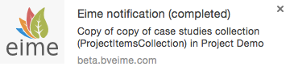
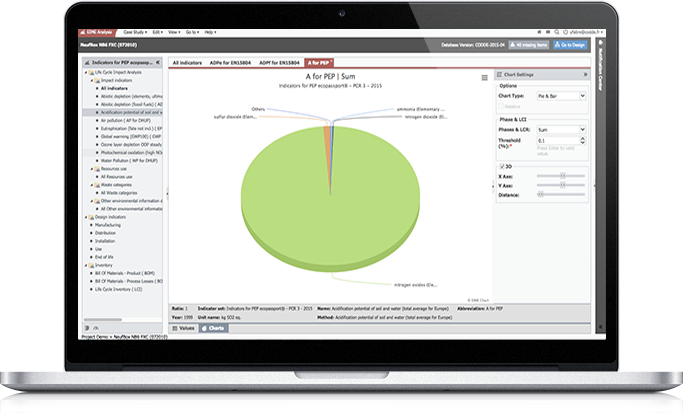
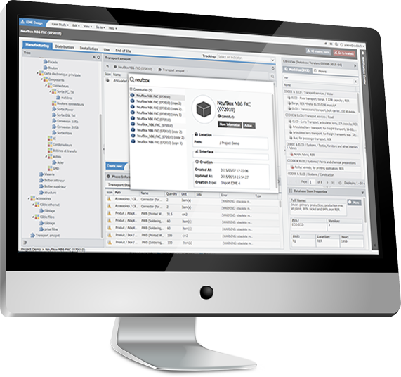

EIME
Perform Life Cycle Assessments App
Environmental Improvement Made Easy
EIME is a referential that allows easily perform Life Cycle Assessments (LCA) and eco-design projects in accordance with international programmes and standards.
In addition to facilitate decision-making and allow a clear environmental communication, speed of its handling and ergonomics guarantee an optimum working efficiency.
Technology
Eime is developed in Ruby on Rails in his core and in Extjs for FrontOffice.
Back office
Ruby Core programation
Eime has a data versioning in the core application. Mixed with many formulas and a huge database, Eime allows very little time, thanks to these optimized applications (postgresql), analyzing the product created by the user in the software in record time.
Notification Center
For long operationg:
- .xls export
- .xls import
- analyse export
- design export
- multi copy/cut/paste
Eime will launch in the background intensive action in time and process so the user can continue to browse without any latency.
Of course, a percentage display of each action is available in real time in the notification center. In addition, a web notification system (Chrome / Firefox) allows to be informed of the purpose of the process.
 The technology of the notification center is based on a background job system (Delayed Job) and a pubsub system (Faye).
The notification center provides a historic of copy / cut / paste to choose one of the last 3 actions in force.
Multi copy/cut/paste
The system of multi copy / cut / paste is used in several interfaces within the application. Eime is a software including the logic of “container / item”, so it is natural that a simple and effective method is implemented to move many projects, folders, boxes study, containers, modules flow.
Front office
Extjs developments
Extjs (javascript) allows to render the application more dynamic with notifications, copy/paste with progression in real time.

Analysis/graphs/calculation Interface
The Analysis part include two distinct parts:
- Table of values
- Gaphics
Some calculations are optimized through database queries to a performance gain. A tab management was created in order to compare the results of calculations.
Graphics exploit previous values to offer the most appropriate chart (pie, bar, column …).
It is possible to refine the results of graphics in real time and also to set these through the 3d or changing scales.
Design Interface
The design part includes several distinct elements:
- Tab
- Tree
- Overview
- Breadcrumb
- Database
A case study contains phases represented by a tab system. These tabs contain a tree on the left, an overview with a search engine, an interactive breadcrumb and information panels.
The database with integrated search engine includes an information panel.
Each element inserted in the overview includes all different rights depending on where the item is located. Visual information just indicate in real time if the insertion is possible to achieve.
The copy / cut / paste is also present. A window opens indicating in real time (as in modern OS) the progress of the current action.
Main Search (spotlight)
 The Main research is a kind of spotlight (spotlight apple) and allows to find any information in the application through a search window.
Project Interface
The Project part provides a project tree on the left, an overview at the center and a retail panel on the right. The copy / cut / paste is also active well as the right click allowing more actions.
To Resume
Futurs developments
Other interfaces (database, administration, project manager) are under development and will take the functionalities already present in the existing interfaces.
EIME, it is
- more 20 servers running on Docker with:
- a pubsub server Faye (nginx)
- a background job server Delayed Job (thin)
- a postgres database (AWS RDS)
- A strong application with Ruby on rails (Ruby) for the Core
- A flexible application with Extjs (Javascript) for the View
- A dynamic application with PubSub
Technology: Docker / Ruby on Rails / Coffescript and Extjs / HTML and CSS